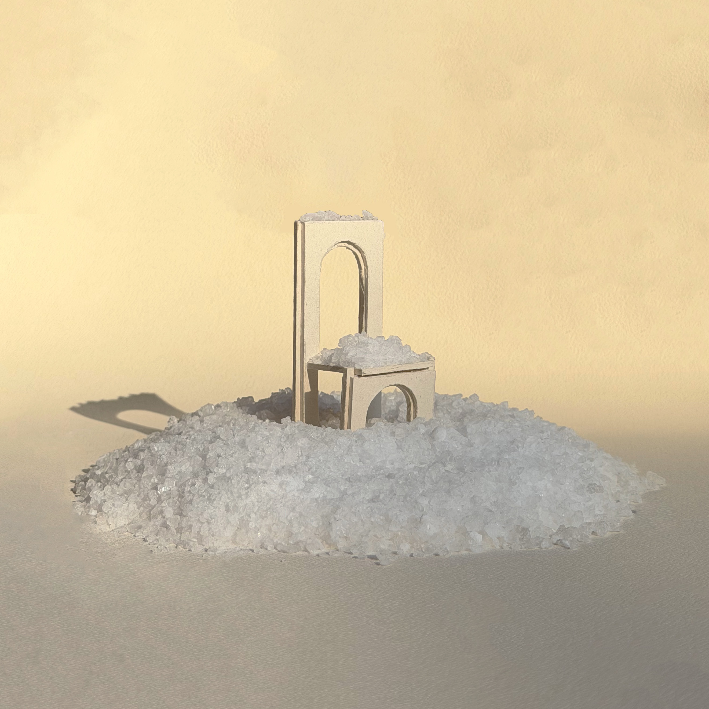
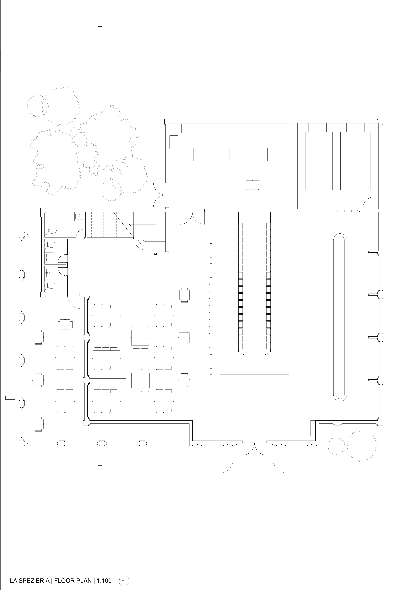
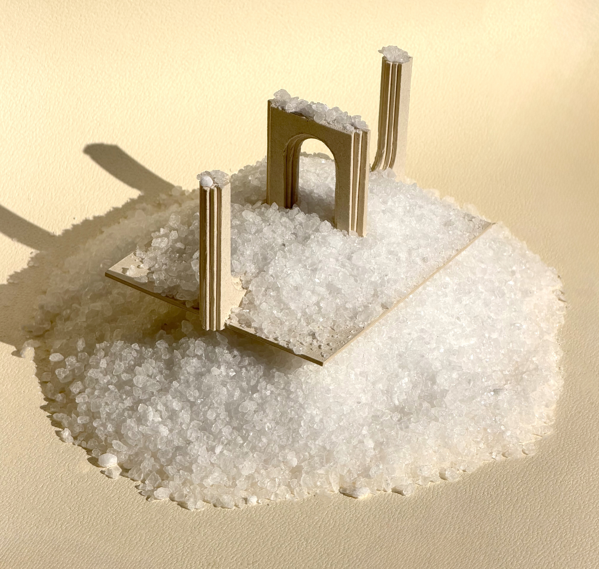
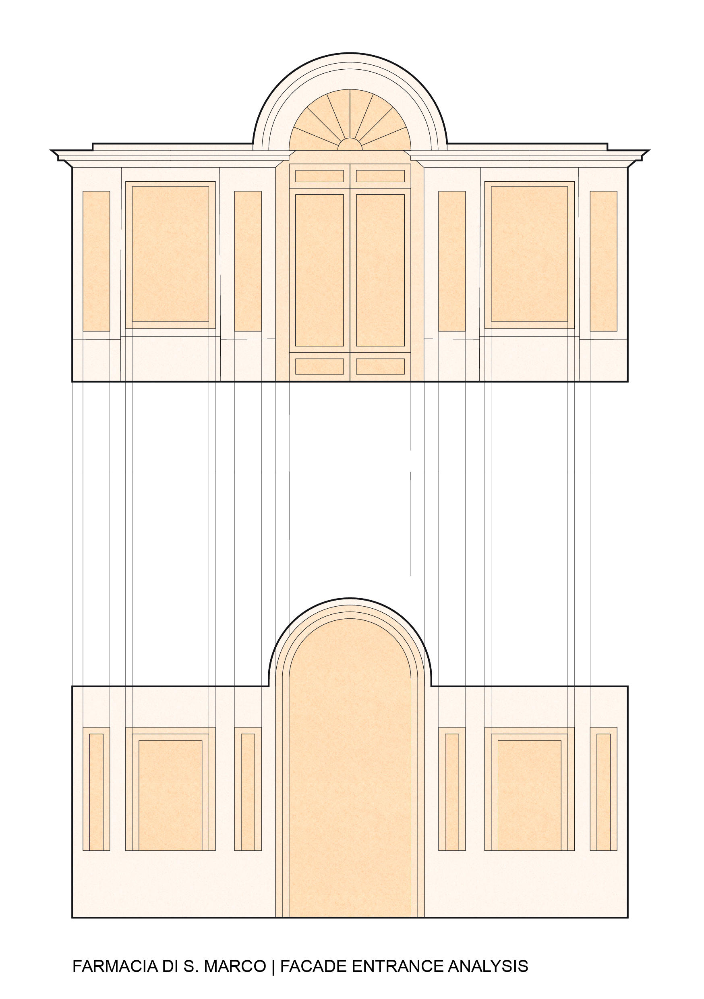
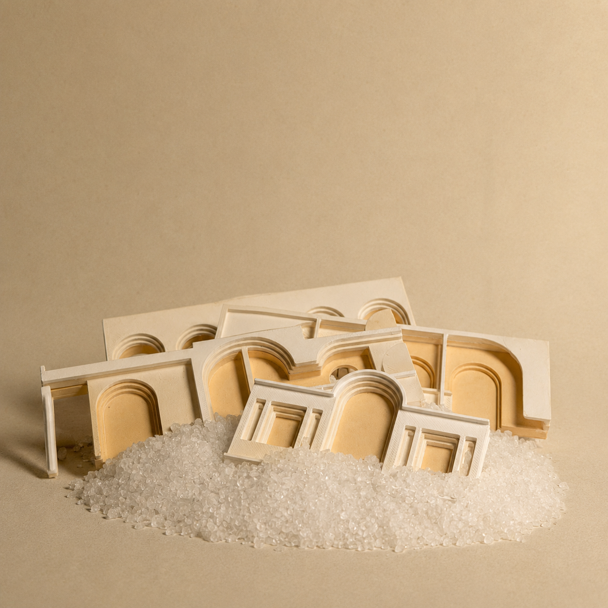

La Spezieria
A spice shop and restaurant exploring salt and spice in Florence's culinary and pharmaceutical history, designed with stepped arches and tiered niches inspired by Carlo Scarpa.
This summer I focused on salt and spice. What first drew me were their architecturally fascinating market displays and their crucial place in Florence's culinary history. The history of salt and spices in Florence stretches back to Rome, where soldiers were often paid in salt rather than currency. Pisa's salt blockade of Florence in the 12th century is why the famous Florentine bread, pane toscano, contains no salt.
I became fascinated with the spezieria, a spice shop, as an architectural type. Though mostly antiquated now, its clearest typological ancestor is the city's apothecaries and pharmacies.
La Spezieria occupies what was once the Medici Botanical Garden grounds, adjacent to San Marco. The herbs cultivated here for the apothecary served culinary, medicinal, and artistic purposes. The facade references this pharmaceutical heritage. Situated perpendicular to the historic Farmacia facade, it borrows its proportions as a formal gesture.






I drew heavily from Carlo Scarpa's work, implementing his stepped arches and niches across multiple scales, from furniture to the building itself. This language creates a visual rhythm and sense of layered discovery throughout the space.
La Spezieria functions as both a restaurant and spezieria, a spice shop. Spices, salts, and herbs are displayed in the niches formed by the arches and occupy half of the central counter. The other half serves as a bar, featuring spice and salt-based beverages. A rooftop garden hangs above the dining space, so diners eat surrounded by their culinary sources.
The grid comprises ten-by-ten-foot modules, offset in plan, creating pockets of sightlines and intimate dining alcoves. A spice cabinet at scale stores fragments and friezes from the building, containing reliefs of key sections. These compressed fragments emphasize the tiered, layered, stepped Scarpa design language throughout the project.
